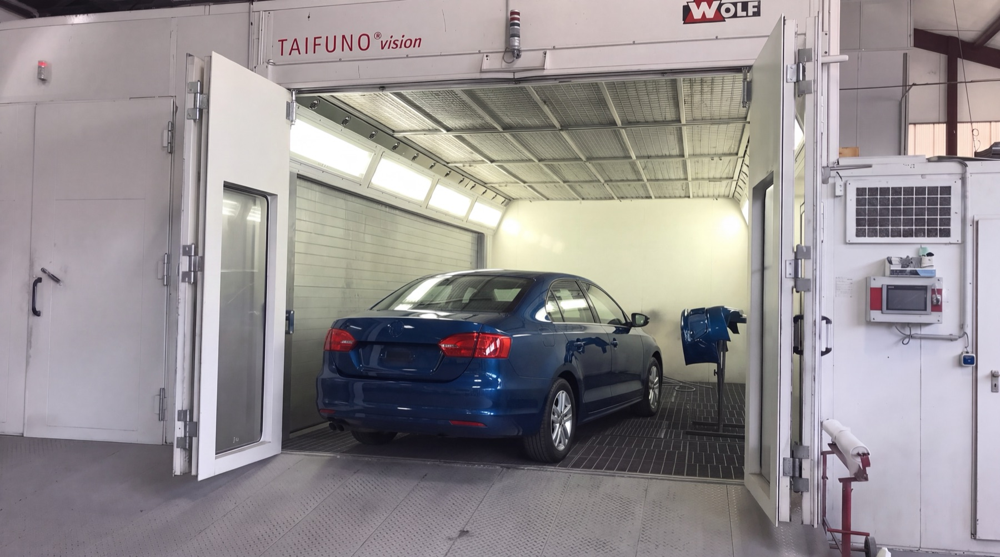

Lack.
Karosserie.
Glanz.
Lackiermeisterfachbetrieb in Düsseldorf. Seit 1996, auf 3000 qm, alles aus einer Hand.
Leistungen
Was wir für Ihr Fahrzeug tun
 Lackiererei
Lackiererei Smart Repair
Smart RepairProbieren Sie es aus
Ziehen Sie den Lack auf.
Schieben Sie von links nach rechts: vorher unlackiert, nachher wie neu. Fotografiert in unserer Lackierkabine.


Alles aus einer Hand
Lack, Karosserie, Mechanik, Reifen, Felgen, Aufbereitung: ein Ansprechpartner, kürzere Reparaturzeiten.
Der BetriebSeit 1996
Angefangen mit Fahrzeugaufbereitung, erweitert um Smart Repair und Spot Repair, später um Fahrzeuglackierung. Lackiermeisterfachbetrieb, eingetragen in der Handwerksrolle Düsseldorf.
- 3000 m²Werkstatthalle
- 150Stellplätze auf eigenem Gelände
- DEKRAgeprüft und zertifiziert
Kundenstimmen
Das sagen unsere Kunden
★★★★★
Preise korrekt und fair. Arbeit sauber, ordnungsgemäß, detailliert. Ich bringe mein Auto seit Jahren immer hin.
★★★★★
Kostenlosen Leihwagen bekommen und die Lackierung war auch top, nur zu empfehlen.
★★★★★
Top Service, sehr freundliches Personal und ein gutes Ergebnis. Zudem gründliche Reinigung von außen und innen!

Kostenloses, unverbindliches Angebot
0211 989 111 88Tichauer Weg 21, 40231 Düsseldorf · Mo–Fr 08–18 · Sa 08–13 Uhr